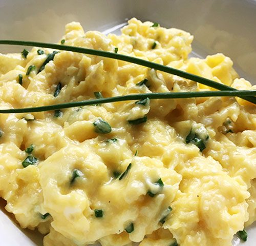

Ramsey's Creamy Scrambled Eggs
Time to cook: 5 minutes
Gordon Ramsey cooks creamy, silky, and delicious french scrambled eggs.
In my opinion, this is the only way to cook scrambled eggs.
Now lets get to cooking!
What you will need
- deep sauce pan
- rubber spatula
- 6 cold eggs
- 15g butter
- Salt and pepper
- Crème fraîche
- Chives
Instructions
- Crack 6 cold eggs into a deep saucepan.
- Add the butter. For smaller batches, use a 2-to-1 eggs-to-butter ratio.
- Put the pan on high heat.
- Stir continuously with a rubber spatula—don't whisk—making sure to scrape the bottom of the pan.
- After 30 seconds, take the pan off the heat. Keep stirring. After about 10 seconds, put back on the heat. Repeat for 3 minutes.
- In the last minute, season the eggs lightly. For extra creamy texture, stir in 1 tsp of crème fraîche.
- Plate and garnish with chopped chives.
congratulations, you have made some fantastic eggs!
return to home page